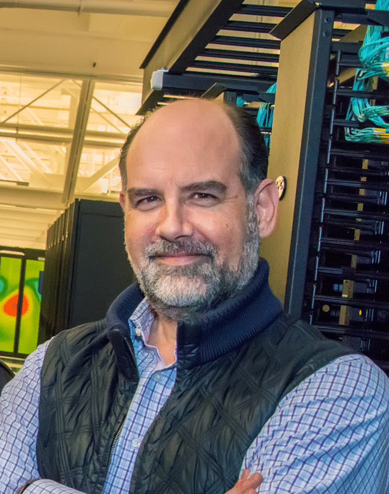

The microbiome, comprised of the microbiota, its collective genomes called the metagenome, and myriads of macromolecules and metabolites, is an integral part of the biosphere and our body. Members of the microbiota include bacteria, archaea, microbial eukaryotes, and respective viruses. Recent studies reveal that miniscule constituents of the microbiomes in each environment play pivotal roles in global cycles of energy and elements as well as health and disease of the residing host. Not only are they important in nutrient digestion and gastrointestinal health, but they are also intimately and intricately involved in metabolism, immunity, development, circulation, and behavior, and modulate them in many ways. RECOMB-Microbiome brings together experts in microbiome research to overview enabling technologies and scientific achievements, to discuss challenges and opportunities, and to explore their ecological or biogeochemical impacts and novel pharmabiotics candidates that have potential for maintaining health or treating diseases.
Venue in Seoul 2025
RECOMB–Microbiome 2025 will be held in the Centennial Hall at the Sinchon campus of Yonsei University. All registration will be processed by the RECOMB local organization. Detailed information at the RECOMB website.
Steering Committee | |
| Ami Bhatt | Stanford University |
| Peer Bork (co-chair) | EMBL Heidelberg |
| Jihyun F. Kim (co-chair) | Yonsei University |
Organizing Committee | |
| Secretaries General | |
| Soon-Kyeong Kwon | Gyeongsang National University |
| Dong-Woo Lee | Yonsei University |
| Program | |
| Sukhwan Yoon | Korea Advanced Institute of Science and Technology |
| Submissions | |
| Sunjae Lee | Gwangju Institute of Science and Technology |
| Publication | |
| Ji-Won Huh | Chungnam National University |
| Operation | |
| Minsik Kim | Yonsei University |
| Publicity | |
| Jongbum Jeon | Korea Research Institute of Bioscience and Biotechnology |
| East Asian Advisory Board | |
| Qi Su | The Chinese University of Hong Kong |
| Takuji Yamada | Tokyo Institute of Technology |
Keynote Speakers | |
|  | |
| Curtis Huttenhower | Harvard T.H. Chan School of Public Health, Harvard Univeristy |
| Nikos Kyrpides | Joint Genome Institute, Lawrence Berkeley National Laboratory |
| Jingyuan Fu | University Medical Center Groningen |
Confirmed Session Speakers | |
| [Highlight] Karthik Anantharaman* | University of Wisconsin–Madison |
| [Highlight] Jin-Woo Bae* | Kyung Hee University |
| [Highlight] Minkyung Baek* | Seoul National University |
| [Paper] Yunha Hwang* | Tatta Bio |
| [Highlight] Che Ok Jeon* | Chung-Ang University |
| [Highlight] Bong-Soo Kim* | Ewha Womans University |
| [Highlight] Jaebeom Kim | Seoul National University |
| [Paper] Saritha Kodikara | University of Melbourne |
| [Highlight] Tal Korem* | Columbia University |
| [Highlight] Insuk Lee* | Yonsei University |
| [Paper] Kiseok Lee | University of Chicago |
| [Paper] Pok Man Leung | Monash University |
| [Highlight] Yoram Louzoun | Bar-Ilan University |
| [Paper] Lauren Mak | Weill Cornell Medicine |
| [Paper] Youngjun Park | Max Planck Institute for Biology of Ageing |
| [Paper] Nick Sapoval | Rice University |
| [Paper] Itai Sharon | MIGAL – Galilee Research Institute |
| [Highlight] Jim Shaw | Harvard Medical School and Dana-Farber Cancer Institute |
| [Highlight] Qi Su* | The Chinese University of Hong Kong |
| [Highlight] Ki Tae Suk* | Hallym University College of Medicine |
| [Highlight] Raul Tito Tadeo | KU Leuven |
| [Highlight] Takuji Yamada* | Tokyo Institute of Technology |
| [Highlight] Liping Zhao* | Rutgers University |
| [Paper] Bohao Zou | Hong Kong Baptist University |
| *Solicited | |
To be announced; will include Keynotes, Highlights, Papers, and Lightning talks, as well as Posters.
| Time | Event | Speaker / Details |
|---|---|---|
| 8:30-9:30 | REGISTRATION | The Commons, Yonsei University |
| 9:30-9:40 | OPENING | Centennial Hall, Yonsei University |
| 9:40-10:20 | KEYNOTE 1: TBA | Nikos C. Kyrpides, Joint Genome Institute, Lawrence Berkeley National Laboratory |
| 10:20-10:35 | COFFEE BREAK |
| Time | Event | Speaker / Details |
|---|---|---|
| 10:35-11:00 | H1: Protein interactions in human pathogens revealed through deep learning | Minkyung Baek, Seoul National University |
| 11:00-11:25 | H2: Identification of key metabolic microbiota from the human microbiome and their correlation with health and disease | Che Ok Jeon, Chung-Ang University |
| 11:25-11:50 | H3: Metabuli: sensitive and specific metagenomic classification via joint analysis of amino acid and DNA | Jaebeom Kim, Seoul National University |
| 11:50-12:10 | P1: Multi-label classification with masked loss for predicting multi-antibiotic resistance in mixed-species MALDI-TOF MS profile | Youngjun Park, Max Planck Institute for Biology of Ageing |
| 12:10-13:40 | Lunch / Poster Viewing | |
| 13:00-13:30 | Lightning Talks | |
| 13:40-14:20 | KEYNOTE 2: TBA | Jingyuan Fu, University Medical Center Groningen |
| Time | Event | Speaker / Details |
|---|---|---|
| 14:20-14:45 | H4: High-quality genomic catalogs of the human microbiome for the era of microbiome medicine | Insuk Lee, Yonsei University |
| 14:45-15:10 | H5: TBA | Takuji Yamada, Tokyo Institute of Technology |
| 15:10-15:30 | P2: Ensemble Expectation-Maximization enables accurate and lightweight taxonomic profiling of long read sequenced metagenomes | Nick Sapoval, Rice University |
| 15:30-15:50 | P3: Dynamic contrastive learning with pretrained deep language model enhances metagenome binning for contigs | Bohao Zou, Hong Kong Baptist University |
| 15:50-16:10 | COFFEE BREAK |
| Time | Event | Speaker / Details |
|---|---|---|
| 16:10-16:35 | H6: Relational stability for identifying core members in microbiomes | Liping Zhao, Rutgers University |
| 16:35-17:00 | H7: Understanding the human microbiome through multi-omics analysis from an ecological perspective | Bong-Soo Kim, Ewha Womans University |
| 17:00-17:25 | H8: mi-Mic: a novel multi-layer statistical test for microbiota-disease associations | Yoram Louzoun, Bar-Ilan University |
| 17:25-17:50 | H9: Microbiome confounders and quantitative profiling challenge predicted microbial targets in colorectal cancer development | Raul Tito Tadeo, KU Leuven |
| 18:00-20:00 | POSTER SESSION / SATELLITES RECEPTION |
| Time | Event | Speaker / Details |
|---|---|---|
| 8:30-9:30 | REGISTRATION | The Commons, Yonsei University / Centennial Hall, Yonsei University |
| Time | Event | Speaker / Details |
|---|---|---|
| 09:30-09:55 | H10: Processing-bias correction with DEBIAS-M and implications for analyzing the microbiome in cancer | Tal Korem, Columbia University |
| 9:55-10:20 | H11: Rapid species-level metagenome profiling and containment estimation with sylph | Jim Shaw, Dana-Farber Cancer Institute, Harvard Medical School |
| 10:20-10:40 | P4: Gaia: A context-aware sequence search and discovery tool for microbial proteins | Yunha Hwang, Tatta Bio |
| 10:40-11:00 | P5: Using lossless compression algorithms to improve metagenomics binning and accelerate genome taxonomic classification | Ital Sharon, MIGAL-Galilee Research Institute |
| 11:00-11:20 | P6: CAMP: A modular metagenomics analysis system for integrated multi-step data exploration | Lauren Mak, Weill Cornell Medicine |
| 11:20-11:35 | COFFEE BREAK | |
| 11:35-12:15 | KEYNOTE 3: TBA | Curtis Huttenhower, Harvard University |
| 12:15-14:15 | Lunch / Poster Viewing | |
| 13:35-14:05 | Lightning Talks |
| Time | Event | Speaker / Details |
|---|---|---|
| 14:15-14:40 | H12: Gut microbiome report to prognosticate liver diseases | Ki Tae Suk, Hallym University Medical Center |
| 14:40-15:05 | H13: Gut microbiota in IBS: Pathogenic insights and FMT-based therapeutics | Qi Su, The Chinese University of Hong Kong |
| 15:05-15:30 | H14: Microbial network inference for longitudinal microbiome studies with LUPINE | Saritha Kodikara, The University of Melbourne |
| 15:30-15:50 | P7: Longitudinal oropharyngeal microbial signatures in patients undergoing Allogeneic Hematopoietic Stem Cell Transplantation | Yan Yan, Shanghai Institute of Immunity and Infection, Chinese Academy of Sciences (CAS) |
| 15:50-16:10 | COFFEE BREAK |
| Time | Event | Speaker / Details |
|---|---|---|
| 16:10-16:35 | H15: Viral ecology and evolution in a freshwater lake over three decades | Karthik Anantharaman, University of Wisconsin-Madison |
| 16:35-17:00 | H16: Bovine gut microbiome: Effect of castration and fecal microbiota transplantation | Jin-Woo Bae, Kyung Hee University |
| 17:00-17:20 | P8: A shift from heterotrophy to autotrophy underlies microbial adaptation to global desert ecosystems | Pok Man Leung, Monash University |
| 17:20-17:40 | P9: Functional regimes define the response of the soil microbiome to environmental change | Kiseok Keith Lee, University of Chicago |
Legend:
* K: Keynote Talk
* H: Highlight Talk
* P: Paper Talk
Highlight and paper abstract submission deadline: 11:59 PM January 31, 2025, AoE
Author notification for highlights and papers: February 7, 2025
Final proceedings version of accepted papers due: February 14, 2025
Poster and short talk abstract submission deadline: 11:59 PM February 14, 2025, AoE
Late-breaking poster abstract submission deadline (pending capacity): 11:59 PM February 28, 2025, AoE
Authors will be notified shortly after poster submission.
RECOMB–Microbiome 2025 invites the submission of abstracts of papers that have been recently published in a journal (mostly during 2024 but not have to be restricted to 2024) or "in press" at the time of submission and are already linked on the journal website. The papers will be selected for oral presentation by taking into consideration the impact of the work on the field, the likelihood that the work will make a good presentation, and the relevance to biological and biomedical research in general. Some highlight talks will be solicited.
Submissions must contain an abstract (including title, author(s), affiliation, e-mail, a link to the published journal version, the identity of the presenter (underlined) followed by the abstract text (about 250 words). In addition to the abstract of the paper, the authors may include a few sentences to explain why the work is suitable for a highlight talk. Please also add the PDF of your full paper as Supplementary. Accepted presenters for the Highlight Track are required to make the presentation themselves and must register for the conference.
RECOMB–Microbiome 2025 invites submissions that represent original, previously unpublished work. It may include those accepted but not in press for publication in a journal. The committee will rigorously review submitted papers. Selected papers will be accepted for oral presentation at the conference. Accepted papers will be published as proceedings, which will be available at the conference. Authors who prefer not to publish their work in the proceedings, may stand by the originally submitted abstract in lieu of a pages-long paper.
RECOMB–Microbiome 2025 welcomes the submission of abstracts for the Poster Track that describe primary results. Accepted poster abstracts will be published as submitted in the conference proceedings.
Please visit the EasyChair system to submit your abstract. EasyChair link: https://easychair.org/conferences?conf=recombmicrobiome2025